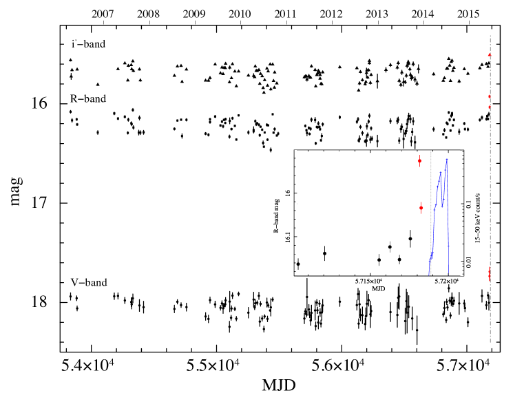
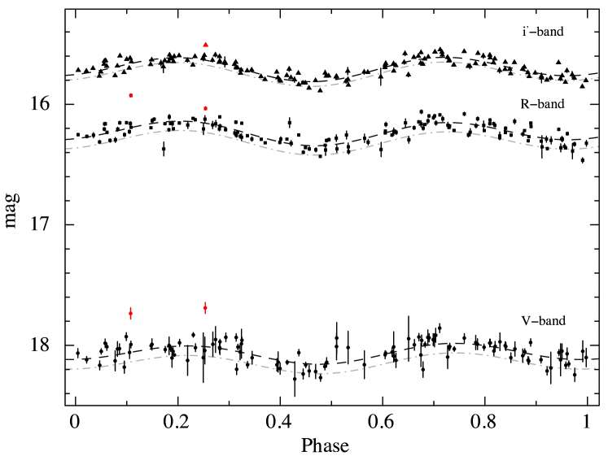
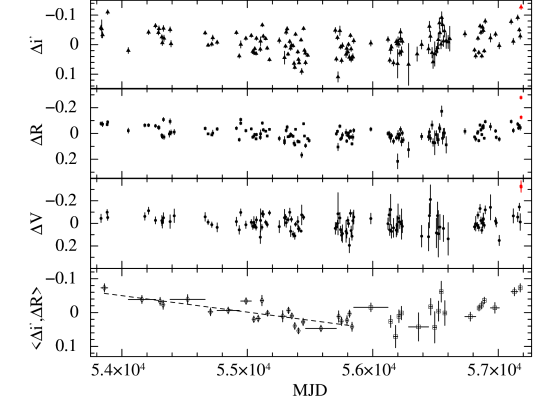
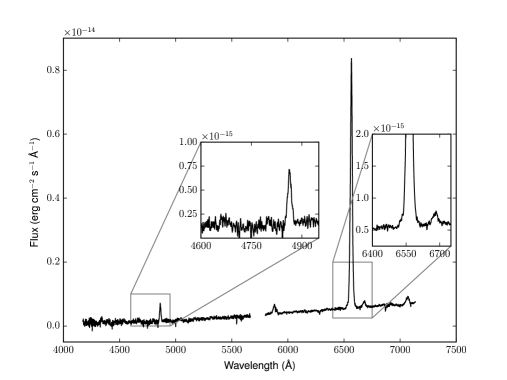
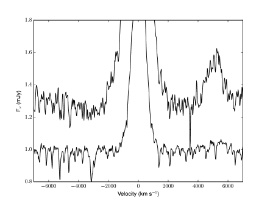

الأحداث التي سبقت ثوران يونيو 2015 في V404 Cyg
الملخص
في 2015 يونيو 15 رصد تلسكوب إنذار الانفجارات (BAT) على متن Swift ثورانا في الأشعة السينية من عابر الثقب الأسود V404 Cyg.
راقبنا V404 Cyg خلال آخر 10 سنوات باستخدام تلسكوب Faulkes Telescope North ذي القطر 2 م في ثلاثة نطاقات بصرية (V وR وi). ووجدنا أنه قبل هذا الثوران بأسبوع واحد كان الفيض البصري أسطع من التضمين المداري في حالة السكون بمقدار 0.1–0.3 قدر، مما يدل على وجود سلف بصري للثوران في الأشعة السينية. وتوجد أيضا إشارة إلى خفوت بصري تدريجي (على مدى سنوات) أعقبه ارتفاع دام شهرين قبل الثوران.
وقد حصلنا مصادفة على طيف بصري لـ V404 Cyg قبل 13 ساعة من إطلاق BAT للإنذار. وكان هذا الطيف هو الآخر أسطع من حالة السكون ()، وأظهر خطوطا طيفية نموذجية لقرص تراكم، مع كون سمات الامتصاص المميزة للنجم المانح أضعف بكثير. ولم يرصد أي انبعاث من He II، وهو ما كان متوقعا لو كان فيض الأشعة السينية قد بدأ يزداد سطوعا بدرجة كبيرة. وهذا، مقترنا بوجود انبعاث H شديد، يبلغ نحو 7 أضعاف مستواه في السكون، يشير إلى أن القرص دخل الحالة الساخنة، حالة الثوران، قبل أن يبدأ الثوران في الأشعة السينية. ونقترح أن الثوران ناتج عن عدم استقرار لزج-حراري انقدح بالقرب من الحافة الداخلية لقرص مبتور. إن تأخرا في الأشعة السينية مقداره أسبوع يتسق مع الزمن اللازم لإعادة ملء المنطقة الداخلية ومن ثم دفع الحافة الداخلية للقرص نحو الداخل، مما يتيح للمادة الوصول إلى الثقب الأسود المركزي، وفي النهاية تشغيل الانبعاث في الأشعة السينية.
شديد، يبلغ نحو 7 أضعاف مستواه في السكون، يشير إلى أن القرص دخل الحالة الساخنة، حالة الثوران، قبل أن يبدأ الثوران في الأشعة السينية. ونقترح أن الثوران ناتج عن عدم استقرار لزج-حراري انقدح بالقرب من الحافة الداخلية لقرص مبتور. إن تأخرا في الأشعة السينية مقداره أسبوع يتسق مع الزمن اللازم لإعادة ملء المنطقة الداخلية ومن ثم دفع الحافة الداخلية للقرص نحو الداخل، مما يتيح للمادة الوصول إلى الثقب الأسود المركزي، وفي النهاية تشغيل الانبعاث في الأشعة السينية.
Subject headings:
التراكم، أقراص التراكم — فيزياء الثقوب السوداء — الأشعة السينية: أجسام منفردة (V404 Cyg, GS 2023+338)1. المقدمة
في الثنائيات السينية منخفضة الكتلة (LMXBs)، يراكم ثقب أسود (BH) أو نجم نيوتروني (NS) مادة من رفيق منخفض الكتلة () يملأ فص روش الخاص به. وكثير من هذه الثنائيات عابر، إذ تتناوب بين فترات طويلة من السكون (سنوات)، تكون فيها اللمعانية في الأشعة السينية خافتة ()، ونوبات أقصر من الثوران تزداد فيها اللمعانية في الأشعة السينية بقوة () وقد تقترب من حد إدنغتون.
بيّن Coriat, Fender & Dubus (2012) أن السلوك العام لثورانات LMXB يوصف جيدا بنموذج عدم الاستقرار الحراري–اللزوجي في القرص (DIM؛ انظر مثلا Cannizzo, 1993; Lasota, 2001)، حيث يمتلئ قرص بارد غير مستقر في حالة السكون بالمادة إلى أن تبلغ حرارته، عند نصف قطر ما، قيمة حرجة تطلق الثوران. وتنتشر جبهات التسخين عبر القرص ناقلة إياه إلى حالة ساخنة وشبه مستقرة وساطعة تبلغ عندها اللمعانية في الأشعة السينية أقصاها. ولا يستطيع DIM تفسير دورة ثورانات LMXB على نحو واسع إلا إذا كان القرص الداخلي مبتورا أثناء السكون (Dubus, Hameury & Lasota, 2001, ويشار إليه فيما بعد بـ DHL).
تتخذ بنية جريان التراكم داخل فجوة القرص المبتور أثناء السكون شكل بلازما ساخنة، رقيقة بصريا، وغير كفوءة إشعاعيا (انظر مثلا Narayan, Barret & McClintock, 1997; Narayan & McClintock, 2008) تشع في الأشعة السينية، و/أو نفاثة (Hynes et al., 2009; Xie, Yang & Ma, 2014)، في حين يبقى القرص الخارجي باردا. غير أن الجريان الداخلي، من منظور DIM، ليس مهما ما دام لا يسهم في ديناميكيات القرص (DHL).
يعد V404 Cyg (GS 2023+338)، ويشار إليه فيما بعد بـ V404، واحدا من أقرب LMXBs وأفضلها دراسة ( kpc؛ Miller-Jones et al., 2009). ويضم ثقبا أسود كتلته (Khargharia, Froning & Robinson, 2010) بفترة مدارية قدرها يوم (Casares & Charles, 1994). أظهر V404 ثلاثة ثورانات على الأقل (1938 و1956 و1989؛ Makino, 1989; Richter, 1989; Życki, Done & Smith, 1999)، وقد أعقب ذلك الآن إطلاق تلسكوب إنذار الانفجارات (BAT؛ Barthelmy, 2000) إنذارا على V404 في 2015 يونيو 15 عند 18:31:38 بالتوقيت العالمي (MJD 57188.772؛ Barthelmy et al., 2015) حين رصد أول توهج في الأشعة السينية ضمن ثوران جديد، تلته توهجات متعددة في الأشعة السينية الصلبة ذات زمن ارتفاع سريع ومدد تمتد لساعات (Rodriguez et al., 2015).
رصد سلف بصري لأول توهج في الأشعة السينية باستخدام تلسكوب Faulkes Telescope North (FTN) ذي القطر 2 م قبل أسبوع من أول إنذار من BAT (Bernardini, Russell & Lewis, 2015). وبسبب الطبيعة المتقطعة لأزمنة بدء ثورانات LMXB، وقلة عدد المصادر العابرة المعروفة حاليا، وغياب رصد منتظم ذي نسبة إشارة إلى ضجيج عالية (وهو صعب حاليا عند أطوال موجية سينية لكنه أسهل عند الأطوال الموجية البصرية)، يصعب رصد تأخر في الارتفاع إلى الثوران بين الأطوال الموجية القصيرة (الأشعة السينية) والطويلة (الأشعة تحت الحمراء-البصرية).
لم تظهر سوى خمسة مصادر أخرى مؤشرا على سلوك مماثل (Orosz et al., 1997; Shahbaz et al., 1998; Jain et al., 2001; Wren et al., 2001; Uemura et al., 2002; Buxton & Bailyn, 2004; Zurita et al., 2006). وهذا التأخر في الأشعة السينية، غير المؤكد المنشأ، يذكر بالتأخر الموثق جيدا بين الأشعة فوق البنفسجية والبصرية في ثورانات النجوم القزمة (Smak, 1998, والمراجع الواردة فيه). لكن LMXBs المذكورة أعلاه كانت أثناء السكون أخفت من حد الكشف لأجهزة الأشعة السينية، لذا كان يمكن لانبعاثها في الأشعة السينية أن يبدأ بالارتفاع قبل أول كشف سيني بوقت طويل (وقد يكون التأخر السيني المستنتج أقل بكثير مما أبلغ عنه).
راقبنا V404 باستخدام FTN ذي القطر 2 م منذ 2006، ونقدم هنا تقريرا عن التحليل التفصيلي لمنحنيات الضوء البصرية من 2006 حتى زمن إنذار BAT، وعن الطيف البصري لـ V404 الذي جمع مصادفة باستخدام تلسكوب William Herschel Telescope (WHT) قبل ساعة من الإنذار. وهذا هو أقرب طيف بصري زمنيا لثنائي LMXB جرى الحصول عليه قبل أول كشف لثورانه في الأشعة السينية. ونناقش النتائج في إطار DIM (DHL).
2. الرصد واختزال البيانات
2.1. القياس الضوئي البصري
أخذت أرصاد V404 باستخدام تلسكوب Faulkes Telescope North (FTN، هاليكالا، ماوي، الولايات المتحدة الأمريكية) ذي القطر 2 م. وحصل التصوير بمرشحات Bessell  وBessell
وBessell  وSloan Digital Sky Survey
وSloan Digital Sky Survey  منذ أبريل 2006، في إطار حملة لرصد
منذ أبريل 2006، في إطار حملة لرصد  من LMXBs (Lewis et al., 2008). ونقدم أكثر من تسع سنوات من البيانات (من 2006 أبريل 8 إلى 2015 يونيو 9). وكانت الأرصاد تجرى عادة مرة في الأسبوع عندما يكون V404 مرئيا، وكانت أزمنة التعريض 200 ثانية في كل مرشح. وتقوم خطوط معالجة آلية بإزالة الانحياز وتصحيح المجال المسطح في الصور العلمية لـ FTN.
من LMXBs (Lewis et al., 2008). ونقدم أكثر من تسع سنوات من البيانات (من 2006 أبريل 8 إلى 2015 يونيو 9). وكانت الأرصاد تجرى عادة مرة في الأسبوع عندما يكون V404 مرئيا، وكانت أزمنة التعريض 200 ثانية في كل مرشح. وتقوم خطوط معالجة آلية بإزالة الانحياز وتصحيح المجال المسطح في الصور العلمية لـ FTN.
يوجد نجم حقلي قدره ، ، على بعد 1.4 ثانية قوسية فقط شمال V404 (Udalski & Kaluzny, 1991; Casares et al., 1993; Barentsen et al., 2014). والنجمان ممتزجان في جميع الصور، لذلك أجرينا قياسا ضوئيا بفتحة (باستخدام PHOT في IRAF) مع اعتماد نصف قطر ثابت أمثل للفتحة قدره 12 بكسل (3.6”) لاحتواء فيض النجمين معا. واستخدمت الفتحة نفسها للقياس الضوئي على أربعة نجوم مقارنة تبعد 13–34 ثانية قوسية عن V404. واستعملت هذه النجوم لمعايرة الفيض، وعايرت بدورها باستخدام نجوم حقلية ذات أقدار معروفة مدرجة في Udalski & Kaluzny (1991) لنطاق  ، وفي Casares et al. (1993) لنطاق
، وفي Casares et al. (1993) لنطاق  ، وفي الإصدار الثاني من بيانات IPHAS (فهرس المسح الفوتومتري H
، وفي الإصدار الثاني من بيانات IPHAS (فهرس المسح الفوتومتري H باستخدام INT للمستوى المجري الشمالي؛ Barentsen et al., 2014) من أجل . وحصلنا إجمالا على أقدار V404 من 392 صورة صالحة للاستخدام.
باستخدام INT للمستوى المجري الشمالي؛ Barentsen et al., 2014) من أجل . وحصلنا إجمالا على أقدار V404 من 392 صورة صالحة للاستخدام.
2.2. التحليل الطيفي البصري
رصد V404 في 2015 يونيو 15 عند الساعة 0500 بالتوقيت العالمي (MJD 57188.208) باستخدام نظام ISIS للتحليل الطيفي والتصوير متوسط التشتت على WHT ذي القطر 4.2m في مرصد Observatorio del Roque de Los Muchachos، لا بالما، إسبانيا. حصلنا على تعريضين مدة كل منهما 600 s يغطيان مدى طيفيا كليا قدره 4173–7153 Å، باستخدام محززي R600B وR وشق بعرض 1” في ظروف فوتومترية ذات رؤية جيدة ( ”). واختزلت الأطياف واستخرجت باستخدام إجراءات IRAF القياسية. وعيّرت الأطياف أحادية البعد من حيث الطول الموجي باستخدام ملاءمة متعددة حدود منخفضة الرتبة لبيانات القوس بين البكسل والطول الموجي. وعايرنا فيض الطيف باستخدام النجم القياسي القريب للفيض BD+25 4655 (Oke, 1990).
وقد سبق الإبلاغ عن أرصاد WHT في Munoz-Darias et al. (2015).
”). واختزلت الأطياف واستخرجت باستخدام إجراءات IRAF القياسية. وعيّرت الأطياف أحادية البعد من حيث الطول الموجي باستخدام ملاءمة متعددة حدود منخفضة الرتبة لبيانات القوس بين البكسل والطول الموجي. وعايرنا فيض الطيف باستخدام النجم القياسي القريب للفيض BD+25 4655 (Oke, 1990).
وقد سبق الإبلاغ عن أرصاد WHT في Munoz-Darias et al. (2015).
3. النتائج
3.1. الارتفاع في الأشعة السينية إلى الثوران
نحوّل معدل العد في BAT ضمن نطاق 15-50 keV، المتوسط على كل مدار (Krimm et al., 2013)
عند زمن الإنذار (MJD 57188.772)، وأول  حد أعلى
قبل الإنذار (MJD 57188.705)، إلى فيض غير ممتص ضمن 15-50 keV باستخدام WebPIMMS.
ونظرا لأن طيف أول توهج شديد الامتصاص وشكله الطيفي غير مقيد جيدا،
استخدمنا قانون قدرة بميل (Kuulkers et al., 2015).
نقيس F وF، على الترتيب. ويظهر V404 تغيرا في الأشعة السينية بعامل يبلغ بضعة أمثال في السكون (Bernardini & Cackett, 2014).
نحوّل أدنى فيض سكوني منشور في الأشعة السينية ضمن 0.3–10 keV (توجيه 2006 لـ XMM-Newton؛ Bradley et al., 2007) إلى فيض ضمن 15-50 keV باستخدام WebPIMMS، و وN (Rana et al., 2015)، فنحصل على F . وبافتراض أن الارتفاع إلى الثوران لأول توهج في الأشعة السينية كان رتيبا وبطيئا، مثل ارتفاع أسي مفرد
يبدأ من مستوى السكون أو من مستوى أعلى منه، فلا بد أنه بدأ بعد MJD 57188.530.
حد أعلى
قبل الإنذار (MJD 57188.705)، إلى فيض غير ممتص ضمن 15-50 keV باستخدام WebPIMMS.
ونظرا لأن طيف أول توهج شديد الامتصاص وشكله الطيفي غير مقيد جيدا،
استخدمنا قانون قدرة بميل (Kuulkers et al., 2015).
نقيس F وF، على الترتيب. ويظهر V404 تغيرا في الأشعة السينية بعامل يبلغ بضعة أمثال في السكون (Bernardini & Cackett, 2014).
نحوّل أدنى فيض سكوني منشور في الأشعة السينية ضمن 0.3–10 keV (توجيه 2006 لـ XMM-Newton؛ Bradley et al., 2007) إلى فيض ضمن 15-50 keV باستخدام WebPIMMS، و وN (Rana et al., 2015)، فنحصل على F . وبافتراض أن الارتفاع إلى الثوران لأول توهج في الأشعة السينية كان رتيبا وبطيئا، مثل ارتفاع أسي مفرد
يبدأ من مستوى السكون أو من مستوى أعلى منه، فلا بد أنه بدأ بعد MJD 57188.530.
تظهر التوهجات التي رصدها INTEGRAL (Winkler et al., 2003) عند 25–100 keV بعد إنذار BAT ارتفاعا سريعا ( h) ومدة تمتد لساعات (Rodriguez et al., 2015). إضافة إلى ذلك، أثناء ثورانه في 1989، أظهر منحنى الضوء ضمن 1.2–37 keV لـ V404 توهجات ذات ارتفاعات شديدة السرعة (دقائق؛ Kitamoto et al., 1989; Terada et al., 1994; Życki, Done & Smith, 1999). ولا يمكن استبعاد سلوك معقد للارتفاع في الأشعة السينية إلى الثوران، مثل ارتفاع بطيء يعقبه ازدياد فجائي، لأن المصدر في السكون يقع دون حد كشف BAT. ونخلص إلى أن MJD 57188.53 يمكن اعتباره بأمان حدا أدنى للارتفاع إلى الثوران لأول توهج في الأشعة السينية رصده BAT.
3.2. القياس الضوئي البصري

 (علامات زرقاء متصالبة).
(علامات زرقاء متصالبة).
في الشكل 1 نعرض منحنى الضوء البصري في نطاقات V وR وi، من 2006 حتى إنذار BAT في 2015. وقبل ذلك بأسبوع (آخر نقطتين)، كانت الأقدار في V وR وi أعلى ما سجل طوال هذه المدة.
باستخدام P يوم وT كتقاويم مدارية (Casares & Charles, 1994)، نولد منحنى الضوء المداري (الشكل 2). إن عدم اليقين النسبي في الطور المحدد بهذه التقاويم هو على امتداد كامل مدة أرصادنا، لكنه لا يتجاوز من سنة إلى التي تليها. ويظهر التغير النموذجي الناتج عن التضمين الإهليلجي للنجم المانح المشوه مَدّيا. كما توجد توهجات منخفضة السعة، يرجح أنها ناتجة عن نشاط تراكم متبق، كما وثق سابقا (Shahbaz et al., 2003; Zurita et al., 2004; Hynes et al., 2004, 2009; Bernardini & Cackett, 2014).
لائمنا منحنيات الضوء المدارية (باستثناء آخر نقطتين) بدالة مكونة من ثابت زائد جيب مزدوج، تكون أطوارها حرة في التغير كي تراعي عدم تساوي الحدود الدنيا والعظمى، كما يشاهد كثيرا في LMXBs الساكنة، بما فيها V404 (Zurita et al., 2004). في 2015 يونيو 8 (MJD ، )، و9 (MJD، )، كان القدر البصري في جميع النطاقات أسطع بكثير من مستوى التضمين السكوني المتوسط بمقدار 0.1–0.3 قدر، وفوق سلوك التوهج منخفض السعة (حيث ). ونطرح أفضل نموذج ملاءمة من منحنيات الضوء المدارية، ونعرض في الشكل 3 منحنيات الضوء المتبقية. ونلاحظ أن آخر نقطتين في منحنيات الضوء لهما أكبر البواقي، وأن البواقي في النطاقات المختلفة تبدو مترابطة على مقاييس زمنية قصيرة (أيام)، وأن اتجاها طويل الأمد (سنوات) يبدو موجودا (خفوت أولا ثم ارتفاع).
، )، و9 (MJD، )، كان القدر البصري في جميع النطاقات أسطع بكثير من مستوى التضمين السكوني المتوسط بمقدار 0.1–0.3 قدر، وفوق سلوك التوهج منخفض السعة (حيث ). ونطرح أفضل نموذج ملاءمة من منحنيات الضوء المدارية، ونعرض في الشكل 3 منحنيات الضوء المتبقية. ونلاحظ أن آخر نقطتين في منحنيات الضوء لهما أكبر البواقي، وأن البواقي في النطاقات المختلفة تبدو مترابطة على مقاييس زمنية قصيرة (أيام)، وأن اتجاها طويل الأمد (سنوات) يبدو موجودا (خفوت أولا ثم ارتفاع).
نقيس الدلالة الإحصائية للترابط باستخدام اختبار رتبة سبيرمان على نطاقي R وi، حيث تكون نسبة الإشارة إلى الضجيج أعلى مقارنة بنطاق V. ومعامل سبيرمان هو ، واحتمال فرضية العدم هو ، ولذلك فإن البواقي مترابطة إيجابيا. وهذا، مع صغر أشرطة الخطأ على كل نقطة بيانات، يشير إلى أن التغير المرصود ذاتي في المصدر، ومن المرجح أنه نشاط تراكم على مقاييس زمنية أطول من دقائق (وهي المدة بين تعريضين متتاليين). نجمع بواقي نطاقي i وR. وفي اللوحة السفلية من الشكل 3 نعرض متوسط نطاقي R وi، ، حيث نستخدم ثلاث نقاط في كل حاوية. ويصبح اتجاه الانخفاض-الارتفاع أوضح الآن. نلائم الجزء الأول من منحنى الضوء (حتى MJD 55834.5) بثابت زائد دالة خطية. ويعطي اختبار F دلالة قدرها لإدراج المكون الأخير. وبين MJD 53860 و55834.5 نقيس انخفاضا قدره .
نرصد سلفا بصريا لأول توهج في الأشعة السينية سجله BAT. وبافتراض أن الحدثين مرتبطان مباشرة وأن ارتفاع توهج الأشعة السينية رتيب، نقدر تأخرا في ارتفاع انبعاث الأشعة السينية (MJD) مقارنة بالانبعاث البصري (MJD) لا يقل عن 7 أيام. وقد يصل إلى 13 يوما إذا أخذنا في الاعتبار أن الفيض البصري ربما بدأ بالارتفاع مباشرة بعد التوجيه السابق للسلف (MJD). وطول هذا التأخر مشابه لما شوهد في LMXBs الأربعة الأخرى التي أظهرت مؤشرا على هذا السلوك. وقد وجدنا أيضا دليلا على اتجاه طويل الأمد. فآخر 2 نقاط من منحنى الضوء المتبقي قبل الثوران تقع أعلى بكثير من هذا الاتجاه السكوني الهابط. وبناء على ذلك، نستطيع تقييد الارتفاع الطويل الأمد بأنه بدأ قبل MJD 57129.5 (2015 أبريل 17).

3.3. توزيع الطاقة الطيفي
لبناء توزيع الطاقة الطيفي (SED) للسلف البصري، نقيس أولا الغلاف الأدنى للتضمين (انظر Zurita et al., 2004)، وهو مساهمة النجم المانح عند كل طور (الشكل 2). ونجمع صور 2015 يونيو 8 و9 (في نطاق i لا يتوافر إلا يونيو 9)، ثم نطرح الغلاف الأدنى من الأقدار المستنتجة. نزيل تأثير الاحمرار من فيوض البواقي باستخدام A (Casares et al., 1993; Hynes et al., 2009) وقانون الانطفاء لـ Cardelli, Clayton & Mathis (1989)، ونقيس للسلف دليلا طيفيا قدره ، حيث . وهذا يتسق مع جسم أسود بدرجة حرارة K، تبلغ ذروته في المجال المرئي. ولا تأخذ هذه الأخطاء في الحسبان أي لا يقين في الانطفاء AV (Hynes et al., 2009).
يمكن أن يكون SED متسقا، ضمن مستوى ثقة  ، مع كل من انبعاث سنكروتروني رقيق بصريا ذي
، مع كل من انبعاث سنكروتروني رقيق بصريا ذي  ، أو انبعاث سنكروتروني سميك بصريا (مسطح) ذي . غير أن Bernardini et al. (2016، مقدم للنشر) بينوا أنه أثناء ثوران 1989 تهيمن النفاثة على الفيض البصري في الحالة الصلبة، لكنها تسهم إسهاما هامشيا في السكون.
، أو انبعاث سنكروتروني سميك بصريا (مسطح) ذي . غير أن Bernardini et al. (2016، مقدم للنشر) بينوا أنه أثناء ثوران 1989 تهيمن النفاثة على الفيض البصري في الحالة الصلبة، لكنها تسهم إسهاما هامشيا في السكون.
قسنا من طيف WHT دليلا طيفيا بعد إزالة الاحمرار قدره للمتصل، وذلك بإزالة خطوط الهيدروجين من الذراع الأحمر، وهو مشابه للدليل الطيفي لبعض التوهجات المرصودة أثناء السكون (Shahbaz et al., 2003)؛ وهذا يشير إلى طيف متغير أثناء الارتفاع الأولي نحو الثوران.
3.4. التحليل الطيفي البصري
يهيمن على الطيف البصري خط انبعاث قوي لـ H (الشكل 4). ويوجد H
(الشكل 4). ويوجد H أيضا، مع عدة خطوط انبعاث من He I. غير أن He II (4686 Å)، النموذجي لأقراص الثوران المضاءة بالأشعة السينية، غائب. للوهلة الأولى تبدو سمات الامتصاص من الرفيق غائبة أيضا، لكن نظرة أدق تكشف تعيينات واضحة مخفية ضمن الضجيج (الشكل 5). وتنتج مقارنة ترابطية بين طيف H
أيضا، مع عدة خطوط انبعاث من He I. غير أن He II (4686 Å)، النموذجي لأقراص الثوران المضاءة بالأشعة السينية، غائب. للوهلة الأولى تبدو سمات الامتصاص من الرفيق غائبة أيضا، لكن نظرة أدق تكشف تعيينات واضحة مخفية ضمن الضجيج (الشكل 5). وتنتج مقارنة ترابطية بين طيف H السابق للثوران ومتوسط 220 أطياف سكونية لـ V404 حصل عليها بين 1990 و2009 (انظر Casares, 2015) مع طيف قالب السرعة الشعاعية HR 8857 قمما واضحة عند سرعات مركزية شمسية متسقة مع سرعات النجم المانح عند الطور المداري لأطيافنا.
وتشير الزيادة في فيض H
السابق للثوران ومتوسط 220 أطياف سكونية لـ V404 حصل عليها بين 1990 و2009 (انظر Casares, 2015) مع طيف قالب السرعة الشعاعية HR 8857 قمما واضحة عند سرعات مركزية شمسية متسقة مع سرعات النجم المانح عند الطور المداري لأطيافنا.
وتشير الزيادة في فيض H مقارنة بمستوى السكون (Casares & Charles, 1992) إلى أن قرص التراكم أسطع بكثير مما هو عليه في السكون.
نقدر نصف القطر الداخلي للقرص المبتور، ، بدراسة H
مقارنة بمستوى السكون (Casares & Charles, 1992) إلى أن قرص التراكم أسطع بكثير مما هو عليه في السكون.
نقدر نصف القطر الداخلي للقرص المبتور، ، بدراسة H في الانبعاث. وبقياس نصف العرض عند شدة صفرية (HWZI) نقدر السرعة عند الحافة الداخلية للقرص (Narayan, McClintock & Yi, 1996). نستخدم خوارزمية مربعات صغرى غير خطية لملاءمة متعددة حدود منخفضة الرتبة للمتصل (مع حجب H
في الانبعاث. وبقياس نصف العرض عند شدة صفرية (HWZI) نقدر السرعة عند الحافة الداخلية للقرص (Narayan, McClintock & Yi, 1996). نستخدم خوارزمية مربعات صغرى غير خطية لملاءمة متعددة حدود منخفضة الرتبة للمتصل (مع حجب H ) ثم طرحه. ونطبق النهج نفسه لملاءمة غاوسيين مزدوجين لمقطع H
) ثم طرحه. ونطبق النهج نفسه لملاءمة غاوسيين مزدوجين لمقطع H ، إذ نجد أنه أدق من غاوسي مفرد بسبب وجود مكون أعرض عند قاعدة الخط (الشكل 4). ونستخدم الغاوسي العريض ذا السعة الأقل لتقدير HWZI ومن ثم
، إذ نجد أنه أدق من غاوسي مفرد بسبب وجود مكون أعرض عند قاعدة الخط (الشكل 4). ونستخدم الغاوسي العريض ذا السعة الأقل لتقدير HWZI ومن ثم  عن طريق قياس 5
عن طريق قياس 5 .
.
من ملاءمات الغاوسي العريض ذي السعة الأقل نجد قمة H منزاحة قليلا نحو الأحمر عند Å مع HWZI Å، وهو ما يترجم إلى . وهذا في الواقع حد أدنى على
منزاحة قليلا نحو الأحمر عند Å مع HWZI Å، وهو ما يترجم إلى . وهذا في الواقع حد أدنى على  ، لأن بنى أعلى سرعة موجودة حول قاعدة مقطع الخط، وإن كان من الصعب ملاءمتها. وباستخدام الميل المستنتج البالغ (Khargharia, Froning & Robinson, 2010) نجد أن من أنصاف أقطار شفارتزشيلد () عند MJD 57188.208.
، لأن بنى أعلى سرعة موجودة حول قاعدة مقطع الخط، وإن كان من الصعب ملاءمتها. وباستخدام الميل المستنتج البالغ (Khargharia, Froning & Robinson, 2010) نجد أن من أنصاف أقطار شفارتزشيلد () عند MJD 57188.208.
وللمقارنة، فإن HWZI لخط H المتوسط في السكون هو HWZI، مما يعني . لذلك ربما يكون نصف قطر القرص الداخلي قد انخفض بعامل في طيفنا السابق للثوران مقارنة بالسكون.
المتوسط في السكون هو HWZI، مما يعني . لذلك ربما يكون نصف قطر القرص الداخلي قد انخفض بعامل في طيفنا السابق للثوران مقارنة بالسكون.

 وقاعدة H
وقاعدة H ، على الترتيب.
، على الترتيب.
 2 بكسل) مقارنة بمتوسط الطيف السكوني على مدى 20 سنة (أسفل)، مع تكبير المنطقة المحيطة بـ H
2 بكسل) مقارنة بمتوسط الطيف السكوني على مدى 20 سنة (أسفل)، مع تكبير المنطقة المحيطة بـ H . جمعت الأطياف في إطار السكون للرفيق.
. جمعت الأطياف في إطار السكون للرفيق.4. المناقشة
يتنبأ DIM (انظر المعادلة 51 في Lasota, 2001) بأنه في LMXBs لا يمكن أن تحدث إلا ثورانات من الداخل إلى الخارج (أي إن عدم الاستقرار ينقدح في عمق قرص التراكم وينتشر إلى الخارج).
ولا تبدأ الثورانات من الداخل إلى الخارج بالضبط عند الحافة الداخلية للقرص، كما أن الجبهات تنتشر في الاتجاهين. ولتفسير زمن التكرار الطويل وشدة ثورانات LMXBs ولمعانياتها السكونية في الأشعة السينية، يتطلب DIM أن يكون القرص الداخلي السكوني مبتورا بعيدا عن الجسم المدمج (DHL). وتنتشر جبهات التسخين بسرعة ، حيث  هو معامل لزوجة القرص الساخن و سرعة الصوت. وتموت الجبهة المتجهة إلى الداخل بسرعة عند بلوغ نصف قطر البتر من دون أن تؤثر كثيرا في بنية القرص، ثم يعاد ملء الفجوة خلال زمن لزج. وبما أن الانبعاث السيني للقرص يصدر أساسا من مناطقه الداخلية، فمن المتوقع تأخر عدة أيام في ارتفاع الثوران في الأشعة السينية قياسا إلى الانبعاث البصري. أما في حالة قرص غير مبتور فلن يتجاوز التأخر غالبا 1 يوم (DHL).
هو معامل لزوجة القرص الساخن و سرعة الصوت. وتموت الجبهة المتجهة إلى الداخل بسرعة عند بلوغ نصف قطر البتر من دون أن تؤثر كثيرا في بنية القرص، ثم يعاد ملء الفجوة خلال زمن لزج. وبما أن الانبعاث السيني للقرص يصدر أساسا من مناطقه الداخلية، فمن المتوقع تأخر عدة أيام في ارتفاع الثوران في الأشعة السينية قياسا إلى الانبعاث البصري. أما في حالة قرص غير مبتور فلن يتجاوز التأخر غالبا 1 يوم (DHL).
يمكن العثور على وصف للارتفاع إلى الثوران في القسم 5.1 من DHL. ونناقش نتائجنا وفق هذه النسخة الأحدث من DIM. ويمثل التأخر الفرق بين الزمن ، حين يبدأ الثوران عند بعض من القرص المبتور، والزمن ، حين تبلغ الحافة الداخلية للقرص المتحركة إلى الداخل نصف القطر ، حيث ، محققة درجة الحرارة التي تسمح بانبعاث الأشعة السينية.
ويقابل التأخر في الأشعة السينية () الفرق بين نصفي القطرين.
ومن المعادلة 16 في DHL نستطيع تقدير  إذا افترضنا أن تأخر الأشعة السينية البالغ 7 أيام يقابل الزمن اللزج (). ونحصل على يوم، حيث ، و معامل اللزوجة في الفرع الساخن، و نصف قطر القرص،
و درجة حرارة المستوى الأوسط، حيث K
عند بداية الثوران (انظر Lasota, Dubus & Kruk, 2008). نستخدم و و cm (كما في DHL)، ونستنتج أن عدم الاستقرار الموافق لسلف الثوران (MJD 57181.5) ربما انقدح عند (). ونلاحظ أن حجم القرص هو
إذا افترضنا أن تأخر الأشعة السينية البالغ 7 أيام يقابل الزمن اللزج (). ونحصل على يوم، حيث ، و معامل اللزوجة في الفرع الساخن، و نصف قطر القرص،
و درجة حرارة المستوى الأوسط، حيث K
عند بداية الثوران (انظر Lasota, Dubus & Kruk, 2008). نستخدم و و cm (كما في DHL)، ونستنتج أن عدم الاستقرار الموافق لسلف الثوران (MJD 57181.5) ربما انقدح عند (). ونلاحظ أن حجم القرص هو
نستنتج أيضا قيدا مباشرا على  من HWZI لخط H
من HWZI لخط H .
عند MJD 57188.208، قبل أول كشف سيني بـ 13 ساعة (بعد أيام من رصد السلف البصري)، . وهذا حد أعلى على
.
عند MJD 57188.208، قبل أول كشف سيني بـ 13 ساعة (بعد أيام من رصد السلف البصري)، . وهذا حد أعلى على  ، لأن ، ولذلك فهو يمثل قيدا على حجم الحافة الداخلية للقرص المبتور ()، بالقرب من بداية الثوران في الأشعة السينية. ونلاحظ أن هذا الحد الأعلى متسق مع
، لأن ، ولذلك فهو يمثل قيدا على حجم الحافة الداخلية للقرص المبتور ()، بالقرب من بداية الثوران في الأشعة السينية. ونلاحظ أن هذا الحد الأعلى متسق مع  المستنتج من معادلات DIM.
المستنتج من معادلات DIM.
نستطيع استخدام المعادلة A.1 في Lasota, Dubus & Kruk (2008) لتقدير درجة الحرارة الفعالة الحرجة للقرص () اللازمة لتأيين الهيدروجين وبدء الثوران. وباستخدام  المستنتجة، نحصل على (إذ إن اعتماد المعادلة على R وM ضعيف). ونلاحظ أن درجة حرارة القرص في زمن السلف البصري () متسقة مع
المستنتجة، نحصل على (إذ إن اعتماد المعادلة على R وM ضعيف). ونلاحظ أن درجة حرارة القرص في زمن السلف البصري () متسقة مع  .
.
تتنبأ جميع نسخ DIM بفيض بصري يزداد باستمرار أثناء السكون (Lasota, 2001)، في حين أن الفيوض السكونية المرصودة للنجوم القزمة وLMXBs ثابتة أو متناقصة (مع ذلك، انظر Wu et al., 2016). نرصد اتجاها طويل الأمد في القدر البصري لـ V404، يتمثل في انخفاض قدره 0.1 قدر يعقبه ارتفاع قدره 0.1 قدر. ومن المعروف أن المصدر يظهر تغيرات في التضمين البصري من سنة إلى أخرى ذات شدة مماثلة (انظر الشكل 1 في Zurita et al., 2004). ومن المرجح أن معظم التغير الذي نرصده فوق التضمين المداري يعود إلى نشاط التراكم ويحدث عند جميع الأطوار المدارية (الشكل 2).
من المعروف أن التراكم يحدث بمستوى منخفض في السكون (فقد شوهد تغير قصير الأمد في الأشعة السينية والبصرية والراديوية). ومن المرجح أن تغيرات صغيرة في معدل التراكم من سنة إلى أخرى تفسر التغيرات البصرية الطويلة الأمد.
وقد يعكس ارتفاع الفيض البصري منذ أبريل 2015 زيادة حديثة في  انتهت في نهاية المطاف إلى الثوران. يصبح القرص أسخن تدريجيا مع تراكم المادة، وعندما تبلغ درجة الحرارة مستوى التأين تنتشر موجة التسخين من الداخل إلى الخارج بسرعة من موقع الانقداح، القريب من الحافة الداخلية للقرص المبتور، عبر القرص كله (في الاتجاهين).
ثم تتحرك الحافة الداخلية للقرص المبتور نحو الداخل، على المقياس الزمني اللزج الأطول، وبعد أسبوع من السلف البصري، عندما يكون (أي أقل بعامل
انتهت في نهاية المطاف إلى الثوران. يصبح القرص أسخن تدريجيا مع تراكم المادة، وعندما تبلغ درجة الحرارة مستوى التأين تنتشر موجة التسخين من الداخل إلى الخارج بسرعة من موقع الانقداح، القريب من الحافة الداخلية للقرص المبتور، عبر القرص كله (في الاتجاهين).
ثم تتحرك الحافة الداخلية للقرص المبتور نحو الداخل، على المقياس الزمني اللزج الأطول، وبعد أسبوع من السلف البصري، عندما يكون (أي أقل بعامل  مما في السكون)، يكون ساخنا بما يكفي لتوليد انبعاث في الأشعة السينية فنرصد أول توهج سيني.
مما في السكون)، يكون ساخنا بما يكفي لتوليد انبعاث في الأشعة السينية فنرصد أول توهج سيني.
الشكر والتقدير
تتولى شبكة Las Cumbres Observatory Global Telescope Network صيانة FTN وتشغيله. حظي JPL بدعم CNES. ويقر JC بالدعم المقدم من MINECO بموجب المنحتين AYA2013-42627 وPR2015-00397
References
- Barentsen et al. (2014) Barentsen G. et al., 2014, MNRAS, 444, 3230
- Barthelmy (2000) Barthelmy S. D., 2000, in Society of Photo-Optical Instrumentation Engineers (SPIE) Conference Series, Vol. 4140, X-Ray and Gamma-Ray Instrumentation for Astronomy XI, Flanagan K. A., Siegmund O. H., eds., pp. 50–63
- Barthelmy et al. (2015) Barthelmy S. D., D’Ai A., D’Avanzo P., Krimm H. A., Lien A. Y., Marshall F. E., Maselli A., Siegel M. H., 2015, GRB Coordinates Network, 17929
- Bernardini & Cackett (2014) Bernardini F., Cackett E. M., 2014, MNRAS, 439, 2771
- Bernardini, Russell & Lewis (2015) Bernardini F., Russell D. M., Lewis F., 2015, The Astronomer’s Telegram, 7761, 1
- Bradley et al. (2007) Bradley C. K., Hynes R. I., Kong A. K. H., Haswell C. A., Casares J., Gallo E., 2007, ApJ, 667, 427
- Buxton & Bailyn (2004) Buxton M. M., Bailyn C. D., 2004, ApJ, 615, 880
- Cannizzo (1993) Cannizzo J. K., 1993, ApJ, 419, 318
- Cardelli, Clayton & Mathis (1989) Cardelli J. A., Clayton G. C., Mathis J. S., 1989, ApJ, 345, 245
- Casares (2015) Casares J., 2015, ApJ, 808, 80
- Casares & Charles (1992) Casares J., Charles P. A., 1992, MNRAS, 255, 7
- Casares & Charles (1994) Casares J., Charles P. A., 1994, MNRAS, 271, L5
- Casares et al. (1993) Casares J., Charles P. A., Naylor T., Pavlenko E. P., 1993, MNRAS, 265, 834
- Coriat, Fender & Dubus (2012) Coriat M., Fender R. P., Dubus G., 2012, MNRAS, 424, 1991
- Dubus, Hameury & Lasota (2001) Dubus G., Hameury J.-M., Lasota J.-P., 2001, A&A, 373, 251
- Hynes et al. (2009) Hynes R. I., Bradley C. K., Rupen M., Gallo E., Fender R. P., Casares J., Zurita C., 2009, MNRAS, 399, 2239
- Hynes et al. (2004) Hynes R. I. et al., 2004, ApJ, 611, L125
- Jain et al. (2001) Jain R. K., Bailyn C. D., Orosz J. A., McClintock J. E., Remillard R. A., 2001, ApJ, 554, L181
- Khargharia, Froning & Robinson (2010) Khargharia J., Froning C. S., Robinson E. L., 2010, ApJ, 716, 1105
- Kitamoto et al. (1989) Kitamoto S., Tsunemi H., Miyamoto S., Yamashita K., Mizobuchi S., 1989, Nature, 342, 518
- Krimm et al. (2013) Krimm H. A. et al., 2013, VizieR Online Data Catalog, 220, 90014
- Kuulkers et al. (2015) Kuulkers E., Motta S., Kajava J., Homan J., Fender R., Jonker P., 2015, The Astronomer’s Telegram, 7647, 1
- Lasota (2001) Lasota J.-P., 2001, NewAR, 45, 449
- Lasota, Dubus & Kruk (2008) Lasota J.-P., Dubus G., Kruk K., 2008, A&A, 486, 523
- Lewis et al. (2008) Lewis F., Russell D. M., Fender R. P., Roche P., Clark J. S., 2008, ArXiv e-prints
- Makino (1989) Makino F., 1989, IAU Circ., 4782, 1
- Miller-Jones et al. (2009) Miller-Jones J. C. A., Jonker P. G., Dhawan V., Brisken W., Rupen M. P., Nelemans G., Gallo E., 2009, ApJ, 706, L230
- Munoz-Darias et al. (2015) Munoz-Darias T., Sanchez D. M., Casares J., Shaw A. W., Charles P. A., Ferragamo A., Rubino-Martin J. A., 2015, The Astronomer’s Telegram, 7659, 1
- Narayan, Barret & McClintock (1997) Narayan R., Barret D., McClintock J. E., 1997, ApJ, 482, 448
- Narayan & McClintock (2008) Narayan R., McClintock J. E., 2008, NewAR, 51, 733
- Narayan, McClintock & Yi (1996) Narayan R., McClintock J. E., Yi I., 1996, ApJ, 457, 821
- Oke (1990) Oke J. B., 1990, AJ, 99, 1621
- Orosz et al. (1997) Orosz J. A., Remillard R. A., Bailyn C. D., McClintock J. E., 1997, ApJ, 478, L83
- Rana et al. (2015) Rana V. et al., 2015, ArXiv e-prints
- Richter (1989) Richter G. A., 1989, Information Bulletin on Variable Stars, 3362, 1
- Rodriguez et al. (2015) Rodriguez J. et al., 2015, A&A, 581, L9
- Shahbaz et al. (1998) Shahbaz T., Bandyopadhyay R. M., Charles P. A., Wagner R. M., Muhli P., Hakala P., Casares J., Greenhill J., 1998, MNRAS, 300, 1035
- Shahbaz et al. (2003) Shahbaz T., Dhillon V. S., Marsh T. R., Zurita C., Haswell C. A., Charles P. A., Hynes R. I., Casares J., 2003, MNRAS, 346, 1116
- Smak (1998) Smak J. I., 1998, Acta Astronomica, 48, 677
- Terada et al. (1994) Terada K., Miyamoto S., Kitamoto S., Egoshi W., 1994, PASJ, 46, 677
- Udalski & Kaluzny (1991) Udalski A., Kaluzny J., 1991, PASP, 103, 198
- Uemura et al. (2002) Uemura M. et al., 2002, PASJ, 54, 285
- Winkler et al. (2003) Winkler C. et al., 2003, A&A, 411, L1
- Wren et al. (2001) Wren J. et al., 2001, ApJ, 557, L97
- Wu et al. (2016) Wu J., Orosz J. A., McClintock J. E., Hasan I., Bailyn C. D., Gou L., Chen Z., 2016, ArXiv e-prints
- Xie, Yang & Ma (2014) Xie F.-G., Yang Q.-X., Ma R., 2014, MNRAS, 442, L110
- Zurita et al. (2004) Zurita C., Casares J., Hynes R. I., Shahbaz T., Charles P. A., Pavlenko E. P., 2004, MNRAS, 352, 877
- Zurita et al. (2006) Zurita C. et al., 2006, ApJ, 644, 432
- Życki, Done & Smith (1999) Życki P. T., Done C., Smith D. A., 1999, MNRAS, 309, 561